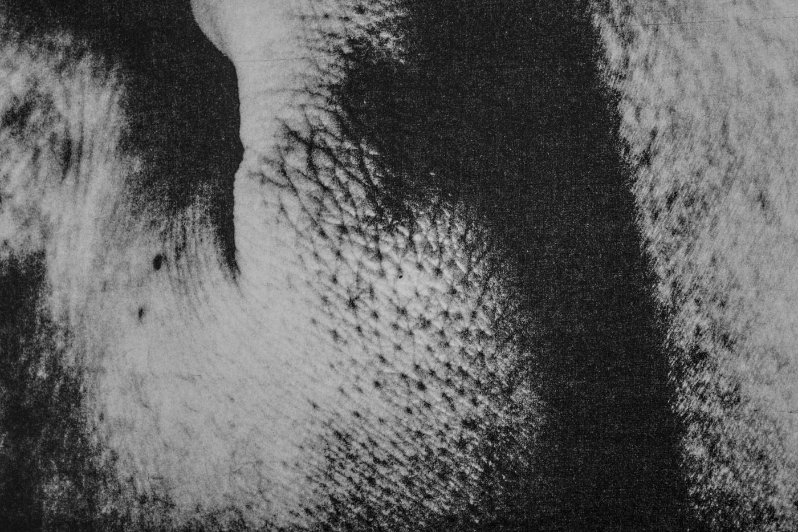
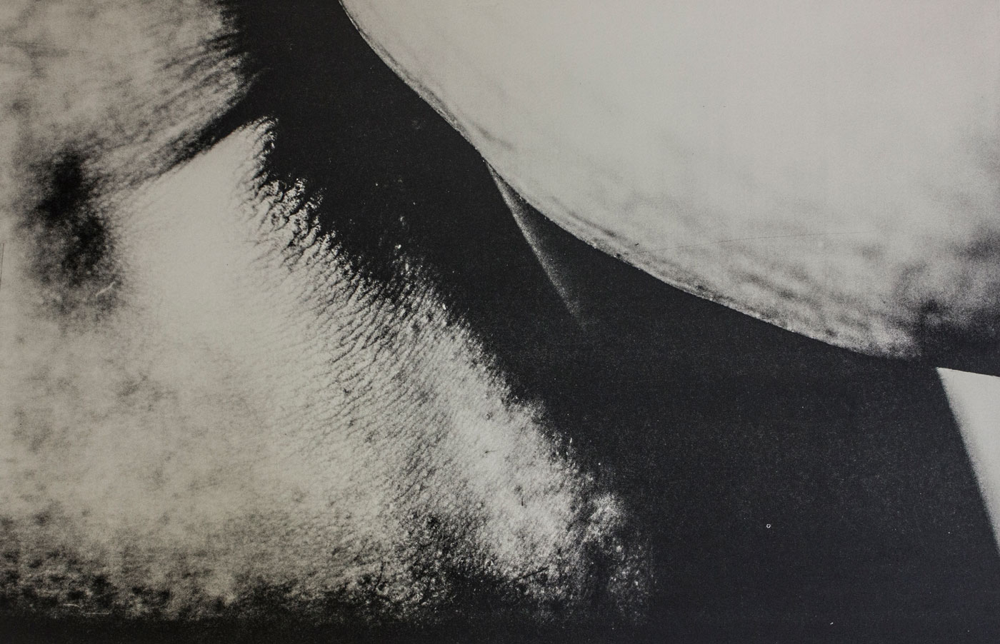
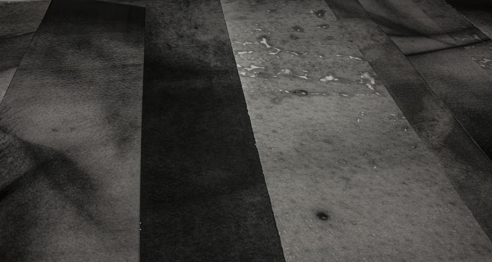
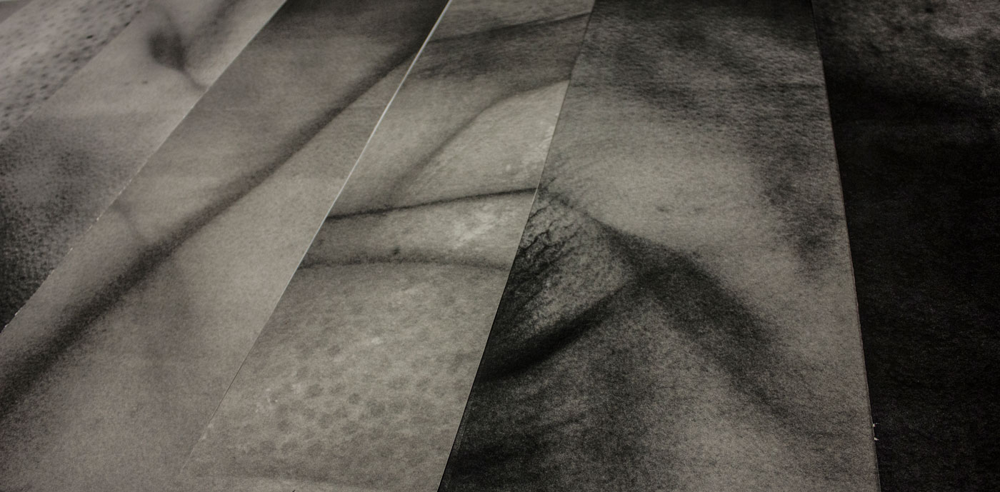

<div class="your-class">

  <div></div>

  
  <div></div>

  <div></div>
  <div></div>
  
        <div></div>
  
  

</div>

<style>
.slick-slide{margin:0 auto;float:right;}
.your-class{margin:0 auto;}
.slick-list{max-width:90%; margin:0 auto;}
.slick-next{display:inline; z-index: 1;}
</style>


  <script type="text/javascript" src="//code.jquery.com/jquery-1.11.0.min.js"></script>
  <script type="text/javascript" src="//code.jquery.com/jquery-migrate-1.2.1.min.js"></script>
<script type="text/javascript" src="//cdn.jsdelivr.net/jquery.slick/1.6.0/slick.min.js"></script>
				

  <script type="text/javascript">
    $(document).ready(function(){
      $('.your-class').slick({
      prevArrow:"",
      nextArrow:""

      });
    });
  </script>
